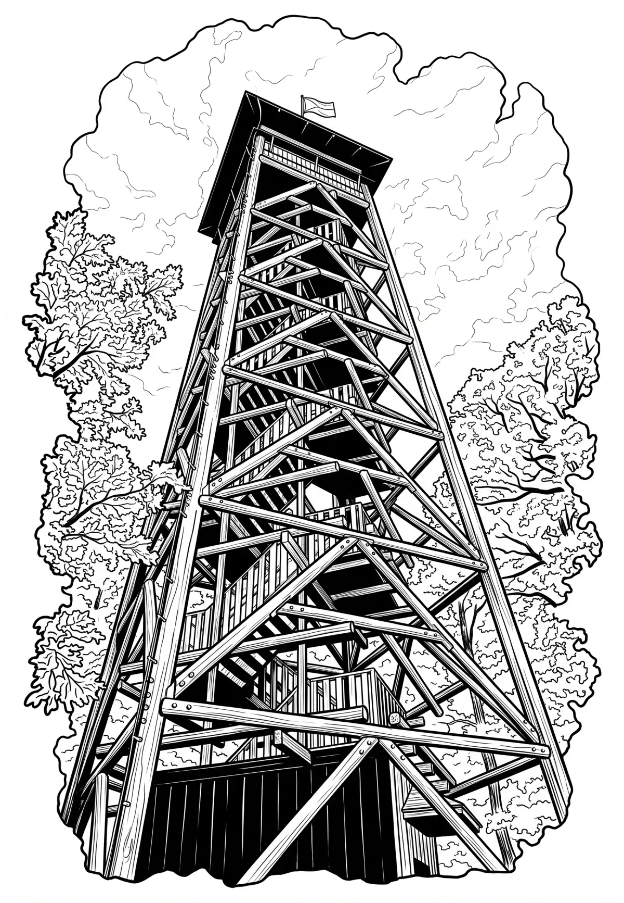

Rozhledna Haniperk
Haniperk je dřevěná rozhledna výšku 24,5 z roku 2019 na Svobodné hoře nedaleko Vodňan.
Více na Wikipedii
Haniperk je dřevěná rozhledna výšku 24,5 z roku 2019 na Svobodné hoře nedaleko Vodňan.
Více na Wikipedii